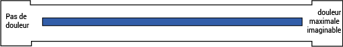

<div *ngIf="form" class="p-grid p-justify-center p-m-3">
  <div class="p-col-12 p-md-10 p-lg-8">
 
      
      <!-- Section Header with Border Under Title -->
      <div *ngFor="let section of form.sections; let s = index" class="section-container p-mb-4">
        <!-- Section Header with Margin and Border Under Title -->
        <div class="section-header p-mb-3" style="border-bottom: 8px solid #1762d3; margin-bottom: 20px;">
          <h4 class="section-title p-text-bold" style="margin-top: 20px;">
            Section Title: {{ section.title }}
          </h4>
        </div>

      <!-- Questions for each section -->
      <div *ngFor="let question of section.questions; let q = index" class="question-container p-mb-3" [ngClass]="{ 'disabled-question': question.conditional }">
        <div class="question-header">
          <h4>{{ q + 1 }} - {{ question.title }}</h4>
        </div>
        <div class="question-body">
          <!-- Text Court -->
          <div *ngIf="question.type === 'Text court'" class="p-field">
            <!-- <label for="shortText{{ q }}">Short Text</label> -->
            <input 
            pInputText 
            id="shortText{{ q }}" 
            [(ngModel)]="textcourt" 
            [disabled]="question.conditional" 
            (change)="TextCourt(question.score, $event, s, 'question'+o +','+s+','+q,'Q '+'('+ s +',' + q+')'); 
                     getDataTextCourt(question, $event, s, q); 
                     updateQuestionStatus(s, q)" 
          />
                    </div>

          <!-- Nombre de Jours -->
          <div *ngIf="question.type === 'Nomber de jours'" class="p-field" [ngClass]="{ 'disabled-question': question.conditional }">
            <!-- <label for="numberDays{{ q }}">Number of Days</label> -->
            <input 
            pInputText 
            id="numberDays{{ q }}" 
            type="number" 
            [(ngModel)]="Nomberdej" 
            [disabled]="question.conditional" 
            placeholder="Enter number" 
            (change)="Nomberdejours(question.score, $event, s, 'question'+o +','+s+','+q,'Q '+'('+ s +',' + q+')'); 
                     getdataTextNb(question.options[o], question, q, o, $event, s); 
                     updateQuestionStatus(s, q)" 
          />
                    </div>

          <!-- Choix multiples options -->
          <div *ngIf="question.type === 'Choix multiples'" class="col-lg-12 col-sm-12 w-100" [ngClass]="{ 'disabled-question': question.conditional }">
            <div *ngFor="let op of question.optioncm; let o = index" class="row">
              <div class="col">
                <p-checkbox 
                [binary]="true" 
                [(ngModel)]="op.selected" 
                [label]="op.text" 
                [inputId]="'checkbox' + o" 
                [disabled]="question.conditional" 
                (onChange)="combinedcheckbox(op, $event, s, 'question' + o + ',' + s + ',' + q, 'Q ' + '(' + s + ',' + q + ')', question, q, o, $event, s); 
                           handleConditionalMultichoix(op, s, q, s); 
                           updateQuestionStatus(s, q)">
              </p-checkbox>
              
                
              </div>
            </div>
          </div>

          <!-- Range Bar -->
<!-- Range Bar -->
<div *ngIf="question.type == 'Range Bar'" style="width: 100%;" class="col-lg-12 col-sm-12 w-100" 
     [ngClass]="{ 'disabled-section': question.conditional }">
  <div *ngFor="let op of question.options; let o = index;">
    <div class="row m-2">
      <div class="col-lg-8 col-sm-12" style="padding-left: 3%;">
        <div class="simple-slider">
          <ngx-slider
            #slider
            id="slider{{s}}{{q}}"
            [min]="10"
            [max]="100"
            [step]="10"
            [value]="question.data"
            [disabled]="question.conditional"
            [options]="sliderOptions[q] || sliderMakeOptions(question)"
            (userChange)="getdataRangeBar(question, question.dataRange, q, o, $event, s, slider); 
                         updateQuestionStatus(s, q)">
          </ngx-slider>
        </div>
      </div>
    </div>
  </div>
</div>

          <!-- VISUELLE ANALOGIQUE -->
          <div *ngIf="question.type === 'VISUELLE ANALOGIQUE'" class="col-lg-12 col-sm-12 w-100" [ngClass]="{ 'disabled-question': question.conditional }">
            <div class="row m-2">
              <div class="col-lg-8 col-sm-12" style="padding: 6%;">
                <div class="simple-slider">
                  <div class="row">
                    <div class="container23" style="width: 600px">
                      
                      <input type="range" min="0" max="10" [(ngModel)]="question.data" (change)="combinedVisuelle(question, 'VISUELLE ANALOGIQUE', q, o, $event, s, $event, s, 'Q '+'('+ s +',' + q+')','visuelleanalogique')" value="5" class="slider" id="slider">
                    </div>
                  </div>
                </div>
              </div>
            </div>
          </div>

<!-- Cases à cocher -->
<div *ngIf="question.type === 'Cases à cocher'" class="col-lg-12 col-sm-12 w-100" [ngClass]="{ 'disabled-question': question.conditional }">
  <div class="grid formgrid">
    <div class="col-12" *ngFor="let op of question.options; let o = index">
      <div class="field-radiobutton p-d-flex p-flex-column p-mb-3">
        <p-radioButton 
        [value]="op.text" 
        [(ngModel)]="question.selectedOption" 
        [disabled]="question.conditional" 
        (ngModelChange)="combinedCasesCocher(op, $event, s, 'question' + o + ',' + s + ',' + q, 'Q ' + '(' + s + ',' + q + ')', op, question, q, o, s);handleConditionalCasesCocher(op, s, q, s);" 
        (click)="updateQuestionStatus(s, q)" 
        [inputId]="'radio' + o">
      </p-radioButton>
      
        <label [for]="'radio' + o" class="textt text-wrap p-mb-2">{{ op.text }}</label>
        
      </div>
    </div>
  </div>
</div>


          <!-- Grille de Cases à Cocher -->
          <div *ngIf="question.type === 'Grille de cases à cocher 2'" class="p-mt-3" [ngClass]="{ 'disabled-question': question.conditional }">
            <p-table [value]="question.grille.options">
              <ng-template pTemplate="header">
                <tr>
                  <th style="text-align: center;">Option</th>
                  <th *ngFor="let col of question.grille.scoreS" style="text-align: center;">
                    <div class="scrollable-header">{{ col.title }}</div>
                  </th>
                </tr>
              </ng-template>
              <ng-template pTemplate="body" let-row let-rowIndex="rowIndex">
                <tr>
                  <td style="text-align: center;">{{ row.title }}</td>
                  <td *ngFor="let col of question.grille.scoreS; let colIndex = index" class="col-lg-1" style="padding-bottom: 20px; text-align: center;">
                    <p-radioButton 
                    name="row_{{rowIndex}}" 
                    [value]="col.title" 
                    [(ngModel)]="row.selectedOption"  
                    [disabled]="question.conditional" 
                    (onClick)="GrilleCases(question.grille, rowIndex, colIndex, s, q, question, col.score, col, s, 'question' + rowIndex + ',' + s + ',' + q, 'Q (' + s + ',' + q + ')'); 
                              GrilleCasesRemplited(question.grille, rowIndex, colIndex, s, q, question, col.score, col, s); 
                              updateQuestionStatus(s, q)">
                  </p-radioButton>
                  
                  </td>
                </tr>
              </ng-template>
            </p-table>
          </div>

        </div>
      </div>
      
    </div>
  
  </div>
     <!-- Confirm button (Centered) -->
     <div class="p-mt-4" style="display: flex; justify-content: center;">
      <button pButton type="button" label="Confirm" (click)="calcul()" class="p-button-success"></button>
    </div>
      <p-dialog header="Loading..." [(visible)]="showOverlay" modal>
        <div class="p-d-flex p-ai-center p-jc-center">
          <i class="pi pi-spin pi-spinner" style="font-size: 2rem;"></i>
        </div>
      </p-dialog>
</div>


  <!-- patient liste -->


  <p-toast key="tst"></p-toast>

  
